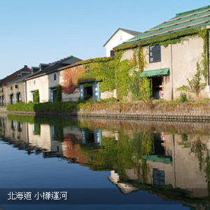
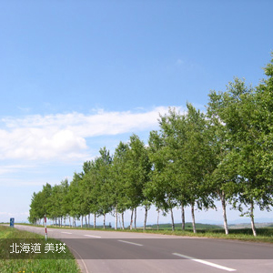

北海道 是日本四島中最北的島嶼，是日本47個都道府縣中唯一的道，為日本除了本州以外最大的島，最大城市為札幌。由於緯度較高, 擁有一年四季變化莫測的美麗自然風景，令遊客們歎為觀止。 北海道的主要景點與城市包括札幌市、小樽市、富良野市、美瑛、函館市、登別、支笏湖、洞爺湖、層雲峽、旭川市...等 。


本網站刊登之所有文字．圖片資訊均受版權法保護 嚴禁擅自複製．轉載 Copyright © 2016 vito-app Co.,Ltd. All rights reserved